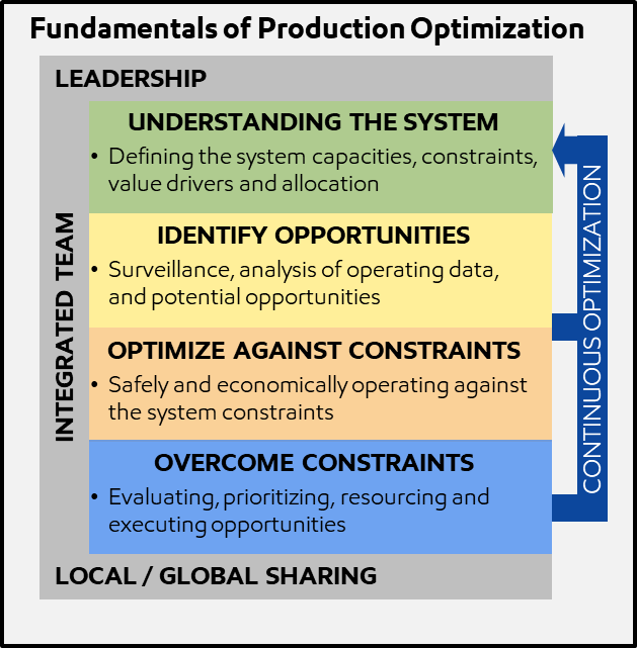

Production Optimization Page
What is Production Optimization?

Production Optimization Vision:
One team unlocking maximum value from producing assets by designing for success then relentlessly challenging and removing constraints from reservoir to sales point, every day
Why Production Optimization?
To maximize asset cash flow by extracting the most value from the reservoirs and process facilities
Our ability to optimize base production is directly dependant on:
- The SAFETY of our operations,
- RELIABILITY and INTEGRITY of our wells and equipment,
- application of our TECHNICAL skills in Reservoir, Wells and Facilities, and
- effective OPERATIONS and MAINTENANCE of our assets